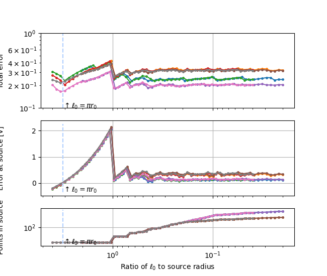

Note
Go to the end to download the full example code
Singularity
Get a detailed sweep of the behavior as element l0 approaches the source’s radius
NEURON mechanisms not found in estimsurvey/.
WARNING:matplotlib.backends.backend_ps:The PostScript backend does not support transparency; partially transparent artists will be rendered opaque.
import xcell
import numpy as np
import Common
import matplotlib.pyplot as plt
import pickle
import os
import matplotlib as mpl
fname = 'Singularity_sweep'
# fname="Singularity"
generate = False
animate = False
lite = True
if lite:
xcell.colors.useLightStyle()
rElec = 1e-6
x0max = rElec*200
study0, _ = Common.makeSynthStudy(fname,
rElec=rElec,
xmax=x0max)
elRs = 1e-6*np.array([1, 5])
x0s = np.array([50, 500])
ks = [0.2, 0.4]
# elRs=1e-6*np.array([1])
# x0s=np.array([200])
# ks=[0.2]
# with mpl.rc_context({'lines.markersize': 2,
# 'lines.marker': 'o',
# 'lines.linewidth': 1,
# 'font.size': 10,
# 'figure.figsize': [3.25, 5]}):
with mpl.rc_context({'lines.markersize': 2.5,
'lines.marker': 'o',
'lines.linewidth': 1.5,
'font.size': 10,
'figure.figsize': [6.5, 5.5]}):
f2, axes = plt.subplots(3, sharex=True, gridspec_kw={
'height_ratios': [4, 4, 2]})
[ax.grid(True) for ax in axes]
ax = axes[0]
ax2 = axes[1]
a3 = axes[2]
ax.set_xscale('log')
ax.set_yscale('log')
ax.xaxis.set_inverted(True)
ax2.set_ylabel('Error at source [V]')
a3.set_ylabel('Points in source')
# a3.set_xlabel('Closest node to origin [m]')
a3.set_xlabel(r'Ratio of $\ell_0$ to source radius')
a3.set_yscale('log')
ax.set_ylabel('Total error')
for xx in x0s:
for rElec in elRs:
for k in ks:
x0max = xx*rElec
condStr = "r%dx%dk%d" % (int(rElec*1e6), xx, int(10*k))
fbase = study0.studyPath+'/'+condStr
if generate:
if animate:
plotter = xcell.Visualizers.ErrorGraph(plt.figure(),
study0)
plotter.axes[0].xaxis.set_inverted(True)
def boundaryFun(coord):
r = np.linalg.norm(coord)
val = rElec/(r*np.pi*4)
return val
etots = []
esrc = []
nInSrc = []
rclosest = []
rrel = []
logmin = int(np.floor(np.log10(rElec/2)))-1
logmax = logmin+2
for l0min in np.logspace(logmax, logmin):
maxdepth = int(np.floor(np.log2(x0max/l0min)))
xmax = l0min*2**maxdepth
study, setup = Common.makeSynthStudy(fname,
xmax=xmax,
rElec=rElec)
metric = xcell.makeExplicitLinearMetric(maxdepth+1,
k)
# metric=xcell.makeBoundedLinearMetric(l0min,
# xmax/4,
# xmax)
setup.makeAdaptiveGrid(metric, maxdepth)
setup.finalizeMesh()
setup.setBoundaryNodes(boundaryFun)
v = setup.iterativeSolve()
# setup.applyTransforms()
setup.getMemUsage(True)
setup.printTotalTime()
if animate:
plotter.addSimulationData(setup)
emetric, evec, _, sortr, _ = setup.calculateErrors()
etots.append(emetric)
esrc.append(evec[sortr][0])
nInSrc.append(sum(setup.nodeRoleTable == 2))
r = np.linalg.norm(setup.mesh.nodeCoords, axis=1)
# rclose=min(r[setup.nodeRoleTable!=2])
rclose = min(r[r != 0])
rclosest.append(rclose)
rrel.append(rclose/rElec)
if animate:
ani = plotter.animateStudy(fbase, fps=10)
pdata = {
'condStr': condStr,
'rclosest': rclosest,
'rrel': rrel,
'etots': etots,
'esrc': esrc,
'nInSrc': nInSrc}
pickle.dump(pdata, open(fbase+'.pdata', 'wb'))
else:
if os.path.exists(fbase+'.pdata'):
data = pickle.load(open(fbase+'.pdata', 'rb'))
rrel = data['rrel']
esrc = data['esrc']
etots = data['etots']
nInSrc = data['nInSrc']
else:
continue
# totcol='tab:orange'
# pkcol='tab:red'
totcol = 'k'
pkcol = 'k'
# rplot=rclosest
rplot = np.array(rrel)
# ax.scatter(rplot,etots,label=condStr)
# ax2.scatter(rplot,esrc)
# a3.scatter(rplot,nInSrc)
sortr = np.argsort(rplot)
ax.plot(rplot[sortr], np.array(etots)[sortr], label=condStr)
ax2.plot(rplot[sortr], np.array(esrc)[sortr])
a3.plot(rplot[sortr], np.array(nInSrc)[sortr])
# xcell.visualizers.outsideLegend(axis=ax)
# ax.legend()
xcell.util.loground(ax, which='y')
f2.align_labels()
for a in axes:
y0, y1 = a.get_ylim()
a.vlines(np.pi, y0, y1, linestyle='dashed', color=xcell.colors.BASE)
# [a.vline(a.)]
figname = 'multiplot-fullwidth'
if lite:
figname += '-lite'
study0.savePlot(f2, figname)
Total running time of the script: ( 0 minutes 3.939 seconds)